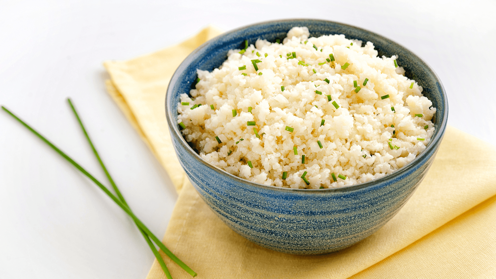
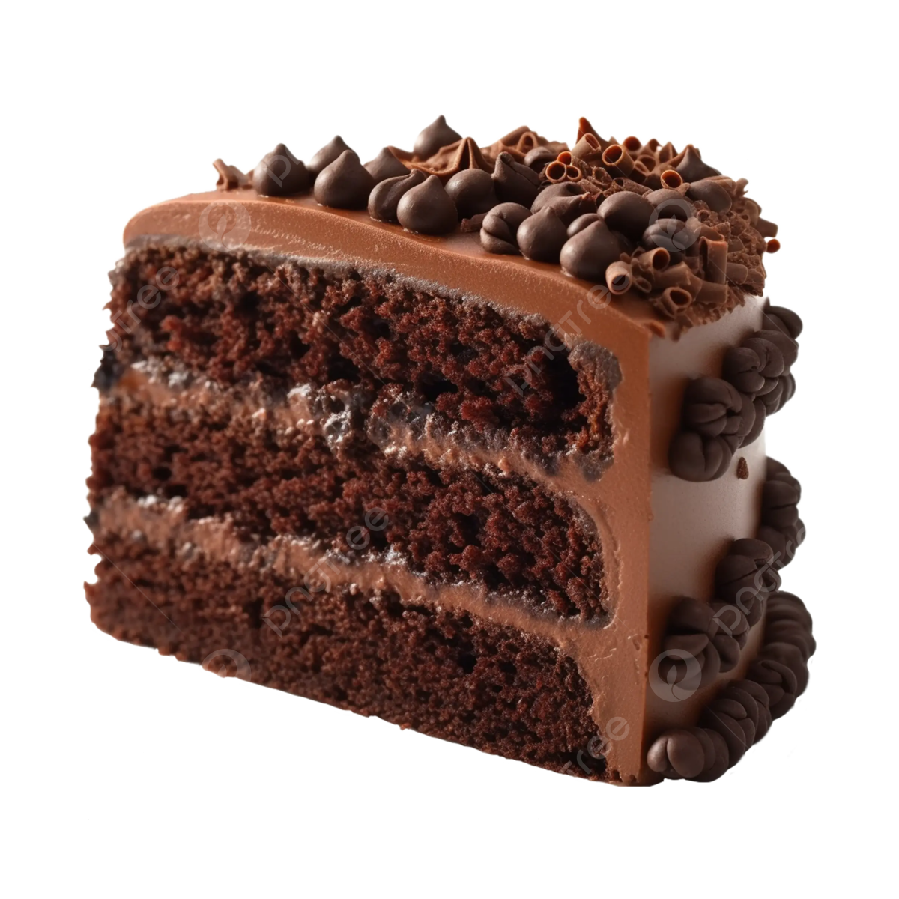
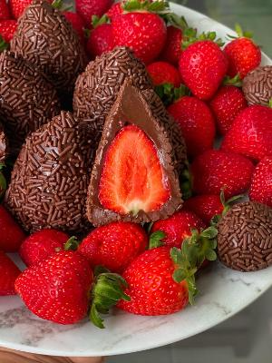

Arroz de Couve-Flor
Ingredientes: Arroz, Couve-Flor, Cebola Media, Azeite.
Modo de Preparo: Deixe a couve-flor picada. Adicione sal, tampe a panela e deixa cozinhar.

Bolo de Cafe
Ingredientes: Farinha de Trigo, Açúcar, Cafe Coado, Chocolate em po, ovos.
Modo de Preparo: Bata o acucar, as gemas e o cafe. Adicione farinha e chocolate e mexa bem. Bata as claras e junte a mistura.

Coxinha de Brigadeiro
Ingredientes: Leite Condensado, Chocolate em Po, Manteiga, Morango, Chocolate Granulado.
Modo de Preparo: Junte o leite condensado, chocolate em po e manteiga. Aqueça no fogo baixo. Envolva os morangos e passe no granulado.